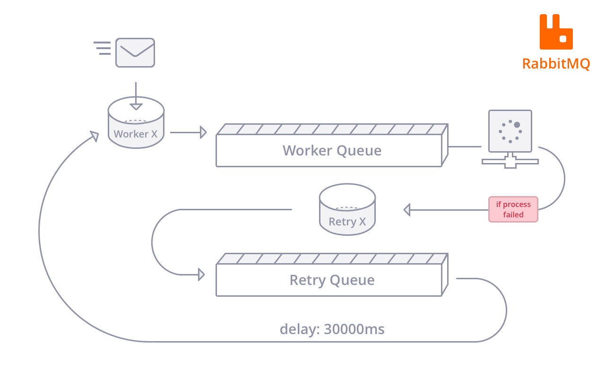

如何通过RabbitMQ的延迟/死信队列实现消息投递系统中的异常重试机制？
问题
给用户发送消息时，如果出现目标方不可达（非200状态码）或发送时网络超时，需要重新投递n次，每次投递的重试间隔可定制；
方案
可以通过RabbitMQ的死信队列dlx（dead letter exchange）和ttl（time to live）机制实现延迟队列；

Dead Letter Exchanges
消息在队列满足达到一定的条件，会被认为是死信消息（dead-lettered），
这时候，RabbitMQ会重新把这类消息发到另外一个的exchange，这个exchange称为Dead Letter Exchanges.
以下任一条件满足，即可认为是死信：
rejected：消息被customer拒绝消费(basic.reject or basic.nack)并且设置了requeue=fasle（不重新入队列）；expired：消息的TTL(per-message ttl)到了（消息过期）；maxlen：达到了队列的长度限制(max-length-bytes)；
注意
- Dead letter exchanges (DLXs) 其实就是普通的exchange，可以和正常的exchange一样的声明或者使用。
- 如果dlx设置的exchange为当前exchange，这样的循环路由情况下，这条私信会被丢弃；
- 死信的路由是采用rabbitmq的消息确认机制实现（Publisher Confirms），如果在死信路由后但是未收到路由队列的消息回执时rabbitmq宕机，重启后会出现
消息重复(同一条消息出现在2个队列)，消息会重新路由到死信队列，那么这时死信队列的消费者需要做好幂等消费处理；
dlx的路由设置
队列中可以设置两个属性：
- x-dead-letter-exchange
- x-dead-letter-routing-key
当这个队列里面的消息成为死信之后，就会投递到x-dead-letter-exchange指定的exchange中，其中带着的routing key就是中指定的值x-dead-letter-routing-key。
异常情况
死信的路由是采用rabbitmq的消息确认机制实现（Publisher Confirms），死信路由后但是未收到路由队列的消息回执，在此时若rabbitmq发生宕机，rabbitmq重启后会出现消息重复(同一条消息出现在2个队列)，消息会重新路由到死信队列，那么这时死信队列的消费者需要做好幂等消费处理；
Time-To-Live（TTL）
RabbitMQ针对TTL有三种场景：
- Per-Queue Message TTL：队列中每条消息都拥有相同的过期时间
- 队列属性：
x-message-ttl
- 队列属性：
- Per-Message TTL：每个消息有不同的过期时间;
- 消息属性：
expiration，毫秒单位，设置为字符串
- 消息属性：
- Queue TTL：队列过期
- 队列属性：
x-expires - 队列以下情况会标记为过期：没有consumer，没有被重新declare，没有basic.get调用
- 队列属性：
注意
- 当同时指定了queue和message的TTL，则两者中较小的那个才会起作用;
RabbitMQ的ttl问题
Queues that had a per-message TTL applied to them retroactively (when they already had messages) will discard the messages when specific events occur.
Only when expired messagesreach the head of a queuewill they actually be discarded (or dead-lettered) Consumers will not have expired messages delivered to them.
Keep in mind that there can be a naturalrace conditionbetweenmessage expirationandconsumer delivery, e.g. a message can expire after it was written to the socket but before it has reached a consumer.
Per-Queue Message TTL设置队列TTL属性的方法，一旦消息过期，就会从队列中抹去，Per-Message TTL设置消息TTL属性的方法，即使消息过期，也不会马上从队列中抹去，因为每条消息是否过期是消息到达队列head，在即将投递时判定；
为什么Per-Message TTL不能按设置的ttl进行投递
- 按照队列的
FIFO原则,Per-Queue Message TTL方法设置ttl，队列中先过期的消息肯定在队列head，RabbitMQ只要定期从队头开始扫描是否有过期消息即可， Per-Message TTL方法设置ttl，每条消息的过期时间不同，如果要准确的删除所有过期消息，势必要每次扫描整个队列，扫描时间可能比过期时间都长，所以只能折衷考虑在等到此消息即将被消费时再判定是否过期，如果过期，再进行删除。
采用RabbitMQ实现延迟队列的坑
由于rabbitmq的死信队列本身也是普通队列，其过期的顺序是按照队列头部顺序的过期的。
也就是说，如果消息A设置过期时间是10s，消息B的设置过期时间1s，那么后面的必须要等消息B过期了才会触发A过期，也就是说都要等10s，
这怎么搞，完全不能满足需求啊…
解决方案-多级延迟队列
- 对于一个队列中每个消息有不同的延迟时间的，可以考虑设置
多级延迟队列（Per-Queue Message TTL）。 - 例如按秒，分，时3个级别，各个级别设置几个队列，并使得延迟相近的尽量放到同一个队列中，尽量减少队列拥堵情况；
- 如，
30s，1m，5m，30m，1h，3h，6h，12h，24h；预置多个超时区间，- 如果设置的过期时间不在预设队列，比如expire=15m，15在[5,30]区间内，因为放在比其小的会阻塞该队列的其他消息触发过期，所以必须取过期时间较大的队列进行投递，即将expire=15的投递到30m队列；
解决方案-多级延迟队列+延时队列（X）
上述的多级延时队列并结合
priority queue实现；
如设置30m队列的最大优先级为1，在expire=15m时，由于15在[5,30]区间内，区间内默认优先级都为0,投递进来的确保是比队列ttl时间短的，这时设置(5,30)之间的优先级为1，那么能保证时间在30m之前的过期时间的消息能不被等于30m的阻塞；那么问题来了，如果投递到ttl=30队列中的消息大多是
priority=1的怎么搞？
由于rabbitmq会优先处理priority大的消息，那么会导致priority=0但是expire时间已到的消息被阻塞没法消费；
Messages which should expire will still only expire from the
headof the queue.
This means that unlike with normal queues, evenper-queue TTLcan lead toexpired lower-prioritymessages getting stuck behindnon-expired higher priority ones. These messages will never be delivered, but they will appear in queue statistics.
注意：priority优先级最大值为255，建议值是[1,10]范围内；
总结
ttl和priority是确定消息何时被消费的两个维度,ttl用于消息重试场景，priority用于类绿色通道场景；- 在队列中消息堆积的情况下，ttl时间已到的消息会被
阻塞，导致不能被即时消费； - 如果一个队列中出现个别消息的
ttl和priority值同时很大，而其他消息的ttl较小，这样会导致后面push的消息被队列头部这种ttl(皮厚)+心黑(priority)的个别消息搞爆掉! 这种消息得用1个单独的队列来特殊对待…